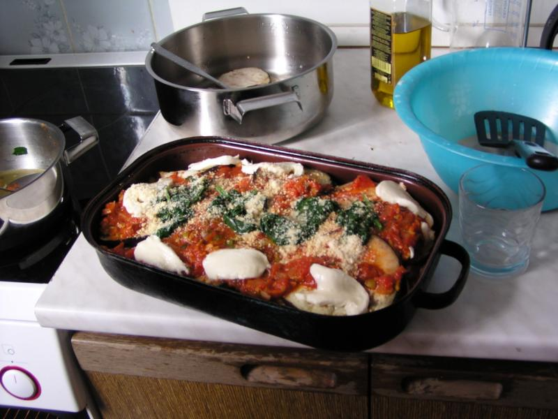

Když můj brácha jednou za čas přijede ze svých toulek po světě zpátky domů, zpravidla se rozhodne vzít chod kuchyně do svých rukou a obohatit náš rodinný jídelníček o něco, co normálně nevaříme…teda alespoň na čas, než se mu to omrzí 8). Ze sourozenecké solidarity se k němu ráda přidávám a snad až na jeden jediný počin (který je nám nicméně dodneška připomínán :D), se zatím vždycky všechno dalo jíst ;-)…
suroviny:
- lilek (spíš větší)
- cibule, česnek
- mlíko
- špenát, petržel
- sůl, pepř, tymián, bazalka, rozmarýn ( bratrem souhrnně označeno jako “Provensálské koření zemí českých” :D)
- olivový olej
- 200-250 g mozzarely
- parmazán
- 1 pohárek bílého vína ( ten zbytek jsme s bráchou vypili po obědě :D)
- asi 1kg rajčat v plechovce
- a zlatý hřeb… olivy :)
Cibuli a 2/3 česneku nadrobno nakrájíme, na horké pánvi tak 5 minut mícháme, přidáme víno, snížíme plamen a mícháme další 2-3 minuty. Poté přidáme rajčata a vaříme dalších 20 minut. Mícháme, aby se vypařila voda a omáčka nám zhoustla. Ke konci přidáme olivy a koření a úplně na závěr čerstvou petržel.
Lilek nakrájíme asi na 0,5 cm silné plátky, vymáčíme je alespoň na 5 minut v mlíku. Každý plátek pak necháme dalších 5 minut po obou stranách smažit na trošce oleje, aby změnil barvu.
Mezitím si v hrnci na troše olivového oleje podusíme zbytek nadrobno nakrájeného česneku a pak přidáme špenát.
Až je všecko hotovo, rozpálíme si troubu na 200-250°C, do pekáče naskládáme vrstvu lilků, na to vrstvu rajčatové omáčky, špenát, mozzarelu - pak opět lilkové plátky, omáčku, špenát, mozzarelu a nahoru parmazán. Až je trouba rozehřátá, šoupneme do ní pekáč a pak už jen pozorujeme “jak lilek kypí a zlátne” (to opravdu není MŮJ výraz :D !)…
Doba pečení: 15 - 20 minut
Nevím jak vy, ale já jsem najezená jen z toho receptu :D…

Lilek